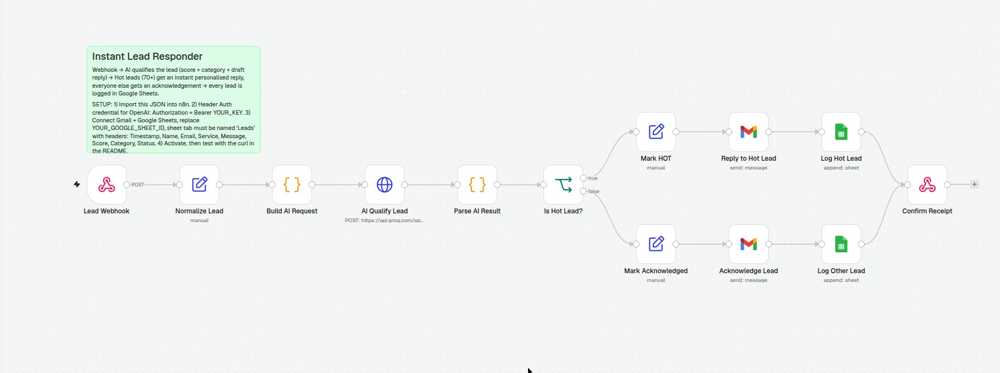

Most leads go cold while they wait. This one doesn't — an AI agent reads every enquiry, scores it, and sends a personalised email reply before a human could even open the inbox. Then logs everything for you.
One n8n workflow, running in production. From the moment a lead lands to a reply in their inbox — no human in the loop, no lead left waiting.
A visitor submits the enquiry form — name, email, the service they want, and their message. The workflow wakes up instantly.
An AI agent reads the message and judges buying intent, returning a score out of 100 and a category — in seconds, not hours.
Hot leads (70+) get an instant, personalised email reply written for their enquiry. Everyone else gets a polite acknowledgement — nobody is ignored.
Every lead — hot or not — is written to Google Sheets with its score, category and status, so the full pipeline is always visible.
This is the real n8n workflow running in production — not a mockup. Fourteen nodes: webhook, AI qualification, email replies, and Sheets logging.

This is not a mockup. The form talks to the live production workflow — submit it and the automation treats you exactly like a real customer enquiry.
The AI agent has your enquiry. If it scored you hot, a personalised reply is already on its way; otherwise you'll get a confirmation acknowledgement.
Your lead has also been logged in Google Sheets with its AI score and category.